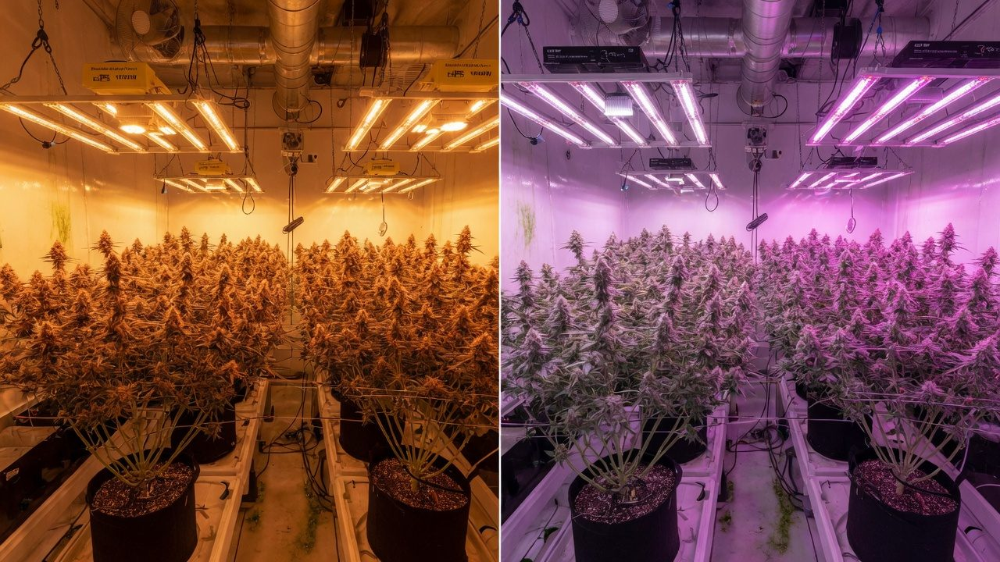
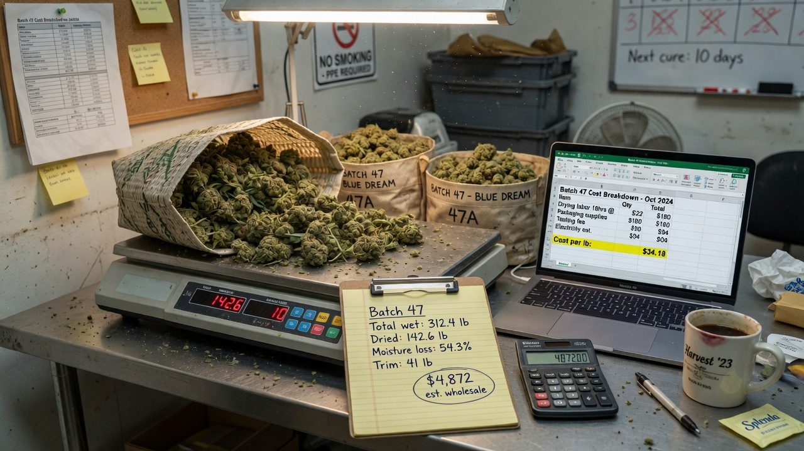
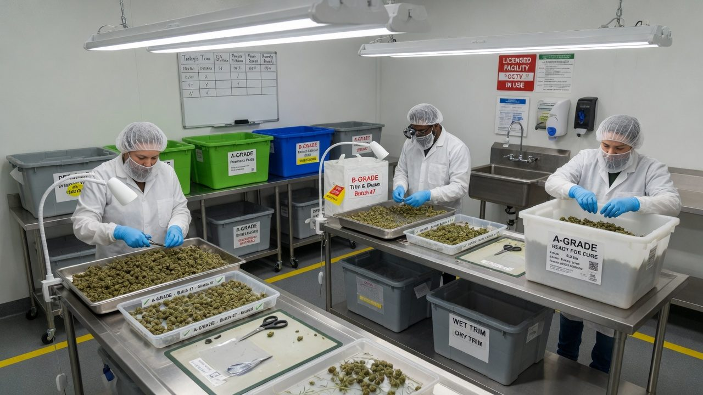
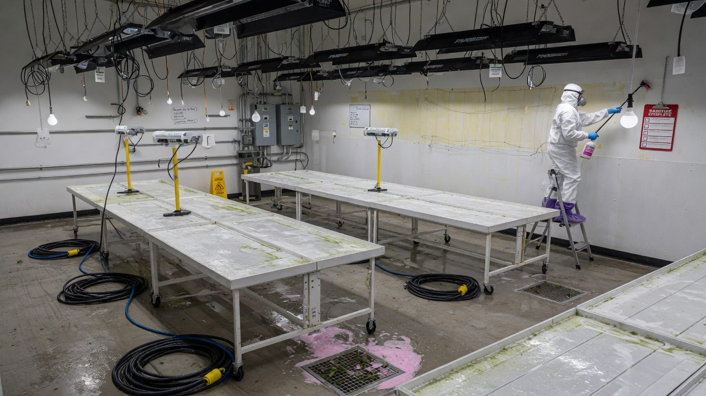

Yield per watt and the cost of a gram
The three yield denominators — g/m² of canopy, g/W of light, g/kWh all-in — what each is actually for, what each hides, and a worked cost stack that turns a fictional 100 m² room into a cost per gram you can argue with. Every number cited or derived in front of you.
Start here
This paper teaches the arithmetic of growing economics: how to build a cost per gram from stated assumptions, which published benchmarks exist, and how far to trust them. It is not investment, business or tax advice. The worked example is a fictional facility. Prices, wages, power tariffs and regulation differ wildly by market — rebuild every table with your own numbers, and take real decisions to your own accountant.
Most grow-room conversations are about plants. Whether the room survives is decided somewhere less romantic: a division. All the dollars you spent in a year, over all the grams you sold. If that number is below your selling price, you have a business. If it isn't, you have an expensive hobby with a licence attached — and no amount of terpene talk changes it.
The trouble is that the industry's favourite yardsticks — grams per square metre, grams per watt — were built for other arguments. They are agronomy metrics and forum-bragging metrics, and they each quietly delete part of the bill. This paper walks through the three common denominators and what each is actually for, hedges the published benchmarks hard (because they deserve it), then builds a complete cost stack for a fictional 100 m² room with every step of the arithmetic shown. From there: labour (the cost line that sneaks up on almost everyone), cycles per year (the hidden multiplier), quality tiers, a sensitivity tornado, and break-even thinking.
Beginner-first, as always. If you can divide two numbers, you can follow all of it — the entire discipline of unit economics is choosing which two numbers to divide.
Accuracy, self-review, and grain-of-salt notes
We've gone to great lengths to keep these guides honest. One of the main ways we do that is self-review: we actively look for claims that are subjective, only lightly backed by literature, or based on grower practice rather than a controlled study — and we call those out instead of dressing them up as settled science.
Often there simply is no paper for the decision you're making. In those cases we're drawing on what other growers report and what has worked in our own rooms. That can still be useful — but it is not a lab proof. Do what works for your plants, your room, and your meters. If a table disagrees with your crop, believe the crop and log the difference.
- Core definitions and measurement units used in the paper
- Safety-critical limits where occupational or standards sources are cited
- Numeric stage targets (light, climate, feed) as starting bands, not laws
- SOPs that work in many rooms but need your genetics and meters
- Any single-number 'guaranteed' yield or potency claim without a multi-site trial
- Controller setpoints copied from another facility without re-calibration
See something glaringly wrong? Tell us and we'll fix it. Please open a GitHub issue with the paper name and what looks off (include a source if you have one): Report an accuracy issue. Local law, labels, and licences always override any recipe here. Inline notes labelled grain of salt flag the highest-risk over-trust points in the text.
The whole paper in five lines
- Cost per gram = every dollar for the year ÷ every gram sold that year. Not per cycle, not per room, not ‘once we're dialled in’. The bank statement, over the scale.
- That one fraction hides three dials: grams per cycle (agronomy), cycles per year (operations), and dollars per year (everything else). Every improvement you will ever make is one of the three.
- g/m², g/W and g/kWh are partial views — useful for diagnosis, dangerous as scoreboards, because each one deletes a cost the others see.
- Published benchmarks span roughly 6× in g/W and far more in g/m² depending on conditions — quote ranges with context or don't quote them at all.
- Labour and turn time move the answer more than the gear you're being sold. Run the sensitivity before the credit card.
Words that keep the maths honest
Nine terms carry the rest of the paper. Most economic arguments between growers are two people using the same word for different fractions.
g/m², g/W, g/kWh — pick the right lens
All three metrics divide the same harvest by a different resource, and each answers a different question. The mistake is not using them — it's using one of them as the scoreboard and forgetting what it can't see.
g/m² of canopy is the agronomist's number. It compares crops, cultivars and steering decisions on the same floor plan, and it's the number most research reports. It contains no time — a nine-week cycle and a twelve-week cycle can post the same g/m² while one produces 30% more per year — and no power, no labour, no grade mix.
g/W of installed light is a relic of the lamp-shopping era, and Section 06 gives it a full autopsy. It usefully asks ‘how much crop per unit of lighting hardware’, but the denominator is nameplate watts: it ignores how long the lamps run, everything the HVAC burns, and — fatally — which fixture generation produced the watts.
g/kWh all-in (or its reciprocal, kWh per kg) divides by every kilowatt-hour through the meter — lights, HVAC, dehumidification, pumps, the lot. It is the one denominator that reconciles against a document someone actually sends you: the power bill. It's also the industry's formal benchmarking metric — Resource Innovation Institute's PowerScore scores facilities on exactly two numbers, kWh per unit of flowering canopy and grams per kWh, across 350+ producers[1]. The spread is enormous: indoor production uses on the order of 18× the energy per gram of outdoor[2], which is why an indoor room lives or dies on this metric while a greenhouse barely thinks about it.
| Metric | Good for | Blind to | Verdict |
|---|---|---|---|
| g/m² per cycle | Comparing crops, cultivars, steering on one floor plan | Time, power, labour, grade | Agronomy tool — never a business score |
| g/W installed | Sizing fixtures; forum bragging | Hours run, HVAC, fixture era, time | Aging badly — see Section 06 |
| g/kWh all-in | Energy productivity; matches the power bill | Labour, rent, capex, testing | Best single resource metric — still not the bill |
| $ per gram | The actual decision | Nothing, if built honestly | The scoreboard |
Whenever anyone quotes a per-m² number — yours included — ask which m². Canopy, room floor, or whole building? A 450 g/m² canopy figure becomes ≈180 g/m² of building the moment you include aisles, veg and dry space at a typical 40% canopy-to-floor ratio. Both are true; only one of them divides into the rent.
What the published numbers actually say — and how hard to hedge
Published cannabis yield figures are a minefield of mixed conditions, mixed denominators and outright projection. Before you benchmark against anything, look at what the honest sources actually report — and how far apart they are.
The forensic baseline. The most honest large-sample g/m² figure in the literature is also the oldest: Dutch police weighed confiscated illicit grows, and the model for the median room — 15 plants/m² under 510 W/m² of HPS — came out at 33.7 g per plant, 505 g/m²[3]. Note the division: 505 g/m² over 510 W/m² is 0.99 g/W. That single study is almost certainly where ‘a gram per watt’ folklore comes from — a median, from HPS rooms, twenty years ago.
The controlled trials. Potter & Duncombe grew under 270, 400 and 600 W/m² of HPS and measured 0.9–1.6 g/W — with the best gram-per-watt result at the lowest wattage[4]. More light grew more grams but fewer grams per watt: diminishing returns per unit of power, measured. Modern LED work shows the same shape from the other side — dry flower yield kept climbing roughly linearly with light intensity up to ≈1,800 µmol·m⁻²·s⁻¹ with no plateau[8], and a follow-up at 600–1,000 µmol found each extra 100 µmol worth ≈4.6 g/plant (≈51 g/m² at ~10 plants/m²), for yields of roughly 276–447 g/m² across that range[6]. Bugbee's group, growing high-light hemp for cannabinoids, reported 500–750 g/m² across three trials[7].
The meta-analysis, and why you hedge. Backer et al. pooled the literature and found reported efficiencies of 0.31–1.97 g/W — a 6× spread — and scaled-up yield projections running from 3.4 to 3,590 g/m², a thousand-fold range driven by extrapolating small-plot numbers to areas nobody actually grew[5]. They also found that raising installed W/m² reduced yield per watt, and that longer flowering periods raised yield per m² — both of which are denominator stories, not plant stories.
| Source | Conditions | Reported | Read it as |
|---|---|---|---|
| Toonen 2006[3] | Median illicit NL room, HPS, 15 plants/m² | 505 g/m² · ≈0.99 g/W | The origin of the folklore |
| Potter & Duncombe 2012[4] | HPS at 270/400/600 W/m² | 0.9–1.6 g/W, best at lowest W | Diminishing returns per watt |
| Rodriguez-Morrison 2021[8] | Indoor, up to ≈1,800 µmol | Yield ≈linear with light, no plateau | Light buys grams — at a power price |
| Llewellyn 2022[6] | LED, 600–1,000 µmol, ~10 plants/m² | ≈276–447 g/m²; +51 g/m² per 100 µmol | A defensible research band |
| Westmoreland 2021[7] | High light, three trials | 500–750 g/m² | The high end, under research care |
| Backer 2019 meta[5] | Pooled literature | 0.31–1.97 g/W; projections to 3,590 g/m² | Why you never quote one number |
| Commercial folklore | Uncited, everywhere | ‘300–600 g/m² per cycle’ | Plausible band, zero provenance — treat as anecdote |
Plant density, cultivar, light level, pot size, flowering length, and — above all — what counted as yield (whole flower? trimmed A-bud? paper projection?) all differ between studies. None of that makes the studies wrong. It makes single-number benchmarks wrong. When someone quotes ‘you should be getting X’, the only professional response is: under what conditions, measured how?

Grams per watt: a lighting-era metric aging badly
‘A gram a watt’ was a useful rule of thumb when every serious room ran the same lamp. Under LED it has quietly become a measure of when you bought your fixtures — because the denominator changed underneath the metric.
A fixture converts watts into photons, and the exchange rate is called efficacy, in µmol of photons per joule. Double-ended HPS — the lamp the folklore was built on — delivers about 1.72 µmol/J. The best LED fixtures measured in 2020 hit ≈3.0 µmol/J (blue/red) and 2.78 (white/red), against practical ceilings around 3.4–4.1[9]. In 2014 the best LEDs managed 1.7 — HPS parity. In one fixture generation, the photons bought per watt roughly doubled.
Now watch what that does to g/W with zero agronomy. Take the same fictional crop — 450 g/m² at 900 µmol·m⁻²·s⁻¹. Delivering 900 µmol with 1.72 µmol/J HPS takes 900 ÷ 1.72 ≈ 523 W/m²; with a 2.8 µmol/J LED it takes 900 ÷ 2.8 ≈ 321 W/m². Same photons, same plants, same grams. The HPS grower reports 450 ÷ 523 = 0.86 g/W; the LED grower reports 450 ÷ 321 = 1.40 g/W — and neither of them grew better than the other.
The efficacy shift also rewrites the buying decision. In Bugbee's lighting trials the white+red LED yielded 4.6% less per m² than HPS — and produced 27% more per dollar of electricity[7]. Judged on g/m², the LED loses. Judged on the metric that pays bills, it wins comfortably. Same data, different denominator, opposite decision — which is the entire argument of this paper in one experiment.
- Use it to sanity-check a design against same-era rooms — an LED room claiming 0.6 g/W or 2.5 g/W deserves questions.
- Never compare across fixture generations, and never let a vendor do it for you.
- For decisions, translate to g/kWh all-in (add hours run and HVAC) and then to $ per gram. Watts don't appear on invoices; kilowatt-hours do.
Every line that ends up in the gram
Cost per gram is built from a short, boring list. The skill isn't clever accounting — it's refusing to leave lines out. Eight lines cover a small indoor facility:
- Labour — wages plus the on-costs (leave, insurance, tax) for everyone who touches the crop, including you at a market rate.
- Energy — lights, HVAC, dehumidification, pumps, controls. All of it, off the bill, not off the fixture nameplate. For context on how dominant this line is indoors: US indoor production was estimated at 1% of national electricity a decade ago[10], and modelled emissions run 2,283–5,184 kg CO₂e per kg of flower depending on climate[11].
- Media + nutrients — substrate, salts, CO₂, IPM consumables.
- Rent — on gross floor area, not canopy.
- Depreciation — the fit-out and gear, spread over useful life.
- Testing + compliance — lab panels per batch plus licences, QA time, records. California data put mandatory testing alone at ≈$136 per pound (≈$0.30/g) once sampling and failure rates are counted[12] — a real line, not a rounding error.
- Packaging + consumables — bags, totes, labels, gloves.
- Other overhead — insurance, security, admin, repairs, software.
A per-cycle cost ignores the days the room earned nothing — turn time, a failed batch, the month the dehumidifier died. Twelve months of dollars over twelve months of grams captures all of it automatically. It's also the only version your accountant, your bank and your licence renewal will recognise.

A fictional 100 m² room, every step shown
Everything below is a made-up room with stated assumptions, chosen to be plausible and to divide cleanly. It is not any real facility's numbers and not a target. The point is the method: swap in your own values line by line and the arithmetic carries.
- 1Fix the canopy and the light100 m² × 350 W/m² = 35,000 W = 35 kW installed. Sanity-check the intensity: 350 W/m² × 2.6 µmol/J = 910 µmol·m⁻²·s⁻¹ — a normal LED flower target.
- 2Grams per cycle450 g/m² × 100 m² = 45,000 g per cycle.
- 3Cycles per year56 flower days + 7 turn days = 63 days flip-to-flip. 365 ÷ 63 = 5.8 cycles per year.
- 4Grams per year45,000 g × 5.8 = 261,000 g = 261 kg per year.
- 5Lighting energy35 kW × 12 h × 56 days = 23,520 kWh per cycle of lighting.
- 6All-in energy23,520 × 2.2 = 51,744 kWh per cycle → × 5.8 ≈ 300,000 kWh per year. Cross-check: 300,000 ÷ 261 kg ≈ 1,150 kWh per kg — efficient-end for indoor; plenty of real rooms run 2–4× this[2].
- 7Price the energy300,000 kWh × $0.20 = $60,000 per year.
- 8Add the rest of the stackLabour $200,000 · rent $60,000 · testing + compliance $46,000 · depreciation $43,000 ($300,000 ÷ 7) · other overhead $40,000 · media + nutrients $26,000 · packaging $20,000. With energy: $495,000 per year.
- 9Divide$495,000 ÷ 261,000 g = $1.90 per finished gram. That is the room's real scoreboard — everything else in this paper is a way of moving it.
| Line | Annual $ | $ per gram | Share | Behind the number |
|---|---|---|---|---|
| Labour | $200,000 | $0.77 | 40% | 4.0 FTE all-in at $50k loaded — grow, trim, lead |
| Rent | $60,000 | $0.23 | 12% | 250 m² gross × $240/m²/yr; canopy is 40% of floor |
| Energy | $60,000 | $0.23 | 12% | 300,000 kWh × $0.20; lighting × 2.2 all-in |
| Testing + compliance | $46,000 | $0.18 | 9% | 52 five-kg batches × $500 + $20k licences/QA[12] |
| Depreciation | $43,000 | $0.16 | 9% | $300k fit-out ÷ 7 years |
| Other overhead | $40,000 | $0.15 | 8% | Insurance, security, admin, repairs |
| Media + nutrients | $26,000 | $0.10 | 5% | ≈$45 per m² per cycle — substrate, salts, CO₂, IPM |
| Packaging | $20,000 | $0.08 | 4% | Bags, totes, labels, consumables |
| Total | $495,000 | $1.90 | 100% | The only number the bank sees |
Now score the same room on every denominator from Section 04, so you can see what each lens would have told you:
| Metric | Value | Derivation | Comment |
|---|---|---|---|
| g/m² per cycle | 450 | assumed | Mid-band against Section 05's ranges |
| g/m² per year | 2,610 | 450 × 5.8 | The number per-cycle bragging hides |
| g/W installed | 1.29 | 45,000 ÷ 35,000 | Top-third of the published 0.31–1.97 range[5] — because LED, not because talent |
| g/kWh all-in | 0.87 | 45,000 ÷ 51,744 | = 1,150 kWh per kg |
| Cost per gram | $1.90 | 495,000 ÷ 261,000 | The scoreboard |

Labour: the biggest line nobody models
Ask a new grower what indoor production costs and they'll talk about power. The fictional room's power bill is $0.23 a gram. Its people are $0.77 — the largest line by a factor of three, and the one most plans either omit or price at zero because ‘I'll do it myself’.
Start with the honest division: $200,000 of payroll over 261 kg is $766 per kg. At a loaded $25/hour that's ≈31 hours of paid time per finished kilogram. Where does it go? Mostly one place: hand trimming. Industry throughput for a hand trimmer is roughly 1–3 lb (0.45–1.4 kg) of dried flower per 8-hour shift, at $15–20/hour or $100–200 per shift piece-rate[13]. Run the division: that's ≈6–18 hours per kg for trim alone. Call it 10 — at $25/hour loaded, $250 per kg, $0.25 per gram, just for trimming. The scissors out-cost the electricity.
Notice the gap: tasks sum to ≈18 h/kg but payroll says ≈31. The missing 13 hours are real work that never touches a bud — mothers and veg care, meetings, cleaning, records, sick days, and plain idle time between tasks. That gap is utilisation, and it's why headcount models built from task lists always come in under the real payroll. Budget from payroll; use task minutes to find what to fix.
- Measure before you buy. A trim machine at 20–40 lb/hour[13] looks unanswerable next to 2 lb/shift — but weigh the grade impact on your product and your buyer before the capex (Sections 11 and 14).
- Smooth the spikes. Harvest weeks need 3× the hands of week 3 of flower. Staggered rooms (Section 10) turn a hiring problem into a scheduling one.
- Price the founder. If your own hours enter at $0, every bad room you'll ever build will look profitable on paper.

Cycles per year: the quietest big number in the model
Everything you produce in a year is grams-per-cycle × cycles-per-year. The industry obsesses over the first term and lets the second one rot. Turn time — the days between harvesting one crop and flipping the next — multiplies everything.
The arithmetic is brutal because it's a division that compounds. At a 7-day turn the room runs 5.8 cycles and ships 261,000 g. Let the turn drift to 21 days — a slow clean here, a late clone batch there, a week waiting on a parts order — and it's 4.7 cycles and 213,300 g. Two extra weeks per turn costs 47,700 g a year: at a $2.20 blended price, over $100,000 of revenue, for zero saved cost. No nutrient program on earth moves the needle like that.
Backer's meta-analysis found longer flowering raised yield per m²[5] — and that's exactly the trade to price properly: an extra week of flower must earn more grams than the same week would earn as a fresh cycle. At 45,000 g per cycle, a 63-day flip earns ≈714 g per calendar day; a 70-day flip has to yield ≈50,000 g per cycle — 11% more — just to tie. Run that division before you extend ripening, not after.
- 1Define flip-to-flipFlower-in to flower-in, in days, on the whiteboard. If it isn't measured it will drift — nobody notices a turn stretching one day per cycle.
- 2Pre-stage the turnRepair list closed, room consumables staged, clean crew booked, before harvest morning. The turn is a pit stop, not a project.
- 3Keep veg ahead of flowerThe most common turn-killer is clones that aren't ready. Veg capacity must run one full flip ahead of the flower room's calendar.
- 4Stagger if you canFour small rooms flipping in rotation give the same annual cycles as one big room — but level the trim labour and turn a crop failure into a 25% event instead of 100%.
Grams per cycle is agronomy. Cycles per year is discipline. The second is cheaper to improve, invisible on every per-cycle metric, and shows up whole in the annual division. When cost per gram drifts and nothing agronomic changed — check the calendar first.
Quality premiums vs volume — the other side of the fraction
Cost per gram is half the story; the cheque depends on the price per gram, and price is tiered. US spot-market averages in early 2024 ran ≈$1,378/lb for indoor flower (≈$3.04/g), $725/lb greenhouse (≈$1.60/g) and $418/lb outdoor (≈$0.92/g)[14] — a 3× spread on production method alone, before grade tiers within each method split further into A-flower, B/smalls and trim, each with its own price.
This is why blended price — not headline price — belongs in the model, and why chasing top-shelf changes the whole equation rather than one line of it. Compare two strategies for the fictional room, which sits near break-even at a $1.90 blended price:
| Path A — volume | Path B — grade-first | |
|---|---|---|
| Annual output | 261 kg | 248 kg (−5%: lower density, slower trim) |
| Grade mix | 60% A / 40% B | 85% A / 15% B |
| Tier prices | $2.40 A · $1.15 B | $2.40 A · $1.15 B |
| Blended price | 0.6×2.40 + 0.4×1.15 = $1.90 | 0.85×2.40 + 0.15×1.15 = $2.21 |
| Revenue | 261,000 × 1.90 = $495,900 | 248,000 × 2.21 = $548,700 |
| Cost | $495,000 | $505,000 (+$10k trim & handling) |
| Profit | ≈ $900 | ≈ $43,700 |
Path B only works if the channel genuinely pays the A-tier price for your extra grade — a promise worth getting in writing before you rebuild the room around it. Chasing top-shelf raises trim hours, lowers plant density, and often stretches the cycle; if the market then pays you B-tier money anyway, you've built Path B's cost base with Path A's revenue. Quality-tier discounts, not yield, are where most ‘profitable’ models die.
Which input actually moves cost per gram
Before spending a dollar to improve the room, ask the model which dial is worth touching. The method: take the fictional baseline ($1.90/g), move one input at a time across a plausible swing, hold everything else, and recompute. Plot the results widest-first and you get a tornado:
| Input moved | Swing tested | Cost/g range | Span |
|---|---|---|---|
| Yield per cycle | 450 → 540 / 360 g/m² | $1.58 – $2.37 | $0.79 |
| Labour bill | ±25% | $1.70 – $2.09 | $0.38 |
| Cycle length | 63 → 58 / 70 days | $1.77 – $2.08 | $0.32 |
| Electricity price | $0.20 → 0.10 / 0.30 per kWh | $1.78 – $2.01 | $0.23 |
| Fit-out capex | ±50% | $1.81 – $1.98 | $0.17 |
| Media + nutrients | ±30% | $1.87 – $1.93 | $0.06 |
Read the order, because it's the whole strategy. A 20% yield move swings cost per gram four times further than halving-or-adding-half to the entire nutrient budget. The two biggest bars — yield and labour — are grower skill and process design. The bars vendors talk about most — power price, capex, bottles — are the small ones. And note what the swing sizes hide: a 20% yield swing is one bad pest cycle or one steering mistake, while a 50% power-price swing requires renegotiating with a utility. The big bars are also the easy ones to move, in both directions.
Rebuild the baseline with your numbers, then move each line ±20% and rank the spans. It takes twenty minutes in a spreadsheet and it will re-order your capex wishlist — usually by moving the trim process and the turn calendar above every piece of hardware on it.
Break-even thinking: where zero lives
Break-even is the yield, price or cycle count where profit crosses zero — and knowing where it sits turns vague anxiety into specific targets. Three divisions, same fictional room:
- Break-even price at 450 g/m² and 5.8 cycles: $495,000 ÷ 261,000 g = $1.90/g blended. Below that cheque, every gram ships at a loss.
- Break-even yield at a $2.20 blended price: $495,000 ÷ $2.20 = 225,000 g → ÷ (100 m² × 5.8) = ≈388 g/m² per cycle. That's the floor under a bad run.
- Break-even cycles at $2.20 and 450 g/m²: 225,000 ÷ 45,000 = 5.0 cycles → flip-to-flip must stay under 365 ÷ 5.0 = 73 days. The calendar has a red line.
| Blended price | Annual revenue (261 kg) | Profit |
|---|---|---|
| $2.60 | $678,600 | +$183,600 |
| $2.20 | $574,200 | +$79,200 |
| $1.90 | $495,900 | ≈ $0 — break-even |
| $1.60 | $417,600 | −$77,400 |
Two habits make break-even thinking useful rather than depressing. First, compute it per constraint — a price floor, a yield floor, a calendar ceiling — so every team member owns a number they can actually influence. Second, recompute after every change: costs creep, prices sag, and last year's comfortable margin can become this year's break-even without a single dramatic event. Falling wholesale prices have been the norm in maturing markets[14] — build the model expecting the band to move down, not up.
Common economic mistakes
Every one of these is survivable once and fatal as a habit. All of them are denominators or missing lines — none of them is agronomy.
g/m² per cycle up 5%, cycles per year down 10% — the room got ‘better’ and produced less. Score g/m² per year and put flip-to-flip days on the wall.
Founder hours priced at $0 make any room look profitable. Price yourself at market rate; if the model dies, the business was you subsidising it with unpaid shifts.
$80,000 of automation to save $6,000 a year is a 13-year payback on gear with a 7-year life. Payback maths before invoices — and remember the tornado: capex was the small bar.
The plan quotes top-tier price on 100% of output. Reality ships 30–50% as B/smalls at half the tier. Model the blended price or be surprised every single quarter.
Comparing your LED g/W to an HPS grower's is comparing fixture efficacy[9], not growing. Within one era it's a sanity check; across eras it's astrology.
Moisture loss, failed tests, remediation, short-shipped orders. California's modelled testing failure rate alone was ≈4%[12]. Grams sold, not grams harvested, belong in the denominator.
When the money number drifts
Symptoms first, causes second — same as diagnosing a sick plant, except the sensor is the bank statement and the lag is a full quarter.
| Symptom | Likely cause | Check first |
|---|---|---|
| Cost/g creeping up, nothing obviously changed | Turn time stretching or grade mix sliding — both invisible to per-cycle metrics | Plot flip-to-flip days and blended price for the last six cycles |
| Great g/m², still no margin | Denominator theatre: slow cycles, heavy labour, or price tier below plan | Recompute $/g from twelve months of bank statement, not the harvest log |
| Energy bill far above the model | Non-lighting loads (winter dehu, reheat) or lights-on hours drifting | Meter the lighting circuit separately; track kWh/kg against your own baseline, not folklore |
| Trim backlog after every harvest | Throughput planned at folklore rates rather than measured ones | Time one shift: hand trim commonly runs 0.45–1.4 kg per 8 h[13] |
| Wholesale cheque smaller than the spreadsheet | Quality discounts, moisture loss, failed or short batches | Reconcile invoiced $ vs modelled $ per batch; track shrink % as its own line |
| Cash fine in summer, ugly in winter | Seasonal HVAC/dehu load and price seasonality stacking | Twelve-month rolling $/g — never judge the room on a single cycle |
Run the room like a factory with three dials
Upstairs there is one number: dollars per finished gram, per year. Downstairs there are three dials: grams per cycle (agronomy), cycles per year (discipline), dollars per year (every line, honestly counted, labour first). Every metric in this paper is a window onto one dial; every improvement you will ever make turns one of the three. The plants are the product — the division is the business.
What to actually do this week, in order:
- Build your own cost stack from the last twelve months of real spending — all eight lines, founder hours priced at market rate.
- Divide by grams sold in the same twelve months. Write the $/g answer somewhere prominent and slightly uncomfortable.
- Put flip-to-flip days on the whiteboard and start the streak.
- Time one full trim shift and one full harvest day — your two biggest labour blocks — before considering any machine.
- Run the tornado with your numbers and re-rank your wishlist by span, not by excitement.
- Recompute quarterly. Costs creep, prices sag, and the model is only honest while it's fresh.
And keep the humility the benchmarks force on you: the published record spans 0.31–1.97 g/W[5] and hundreds of g/m² between honest studies[6][7]. Nobody else's number — including the fictional room's $1.90 — is your number. The method is portable; the answers never are.
Education, not financial advice: this paper shows arithmetic on cited public figures and a fictional example. Licensing, tax, market access and prices are jurisdiction-specific — get local professional advice before betting money on any of it.
References
- Resource Innovation Institute. Cannabis PowerScore benchmarking platform (facility efficiency kWh/ft2 of flowering canopy and production efficiency g/kWh; documented Oregon HPS→LED retrofit +68% g/kWh; most facilities estimated able to save >=30% of energy spend). (industry/manufacturer or non-journal source) https://resourceinnovation.org/blog/welcome-to-the-cannabis-powerscore-an-energy-benchmarking-tool-for-growers-of-all-types/
- New Frontier Data. Comparing cannabis cultivation energy consumption — indoor production uses roughly 18× the energy per gram of outdoor cultivation. (industry/manufacturer or non-journal source) https://newfrontierdata.com/cannabis-insights/comparing-cannabis-cultivation-energy-consumption/
- Toonen M, Ribot S, Thissen J (2006). Yield of illicit indoor cannabis cultivation in the Netherlands. Journal of Forensic Sciences 51(5):1050-1054. (Median room: 15 plants/m², 510 W/m², 33.7 g/plant, 505 g/m².) https://doi.org/10.1111/j.1556-4029.2006.00228.x
- Potter DJ, Duncombe P (2012). The effect of electrical lighting power and irradiance on indoor-grown cannabis potency and yield. Journal of Forensic Sciences 57(3):618-622. (270/400/600 W/m² HPS; 0.9-1.6 g/W, highest at the lowest irradiance.) https://doi.org/10.1111/j.1556-4029.2011.02024.x
- Backer R, Schwinghamer T, Rosenbaum P, et al. (2019). Closing the yield gap for cannabis: a meta-analysis of factors determining cannabis yield. Frontiers in Plant Science 10:495. (Literature 0.31-1.97 g/W; projections 3.4-3,590 g/m²; higher W/m² lowered yield per W.) https://doi.org/10.3389/fpls.2019.00495
- Llewellyn D, Golem S, Foley E, Dinka S, Jones AMP, Zheng Y (2022). Indoor grown cannabis yield increased proportionally with light intensity, but ultraviolet radiation did not affect yield or cannabinoid content. Frontiers in Plant Science 13:974018. (600-1,000 µmol; 27.6-44.7 g/plant at ~10 plants/m²; +51 g/m² per 100 µmol.) https://pmc.ncbi.nlm.nih.gov/articles/PMC9551646/
- Westmoreland FM, Kusuma P, Bugbee B (2021). Cannabis lighting: decreasing blue photon fraction increases yield but efficacy is more important for cost effective production of cannabinoids. PLOS ONE 16(3):e0248988. (Yields 500-750 g/m²; LED −4.6% yield vs HPS per area but +27% per dollar of electricity.) https://doi.org/10.1371/journal.pone.0248988
- Rodriguez-Morrison V, Llewellyn D, Zheng Y (2021). Cannabis yield, potency, and leaf photosynthesis respond differently to increasing light levels in an indoor environment. Front. Plant Sci. 12:646020. https://pmc.ncbi.nlm.nih.gov/articles/PMC8144505/
- Kusuma P, Pattison PM, Bugbee B (2020). From physics to fixtures to food: current and potential LED efficacy. Horticulture Research 7:56. (1,000 W DE HPS 1.72 umol/J; 2020 LED fixtures 2.5-2.8 white+red and 3.0 blue+red; practical limits 3.4 and 4.1 umol/J.) https://doi.org/10.1038/s41438-020-0283-7
- Mills E (2012). The carbon footprint of indoor Cannabis production. Energy Policy 46:58-67. (End-use split lighting 33% / ventilation+dehumidification 27% / AC 19%; ~6,074 kWh and 4,600 kg CO2e per kg; ~13,000 kWh/yr per 4'x4'x8' module; ~1% of US electricity, ~US$6B/yr.) https://doi.org/10.1016/j.enpol.2012.03.023
- Summers HM, Sproul E, Quinn JC (2021). The greenhouse gas emissions of indoor cannabis production in the United States. Nature Sustainability 4:644-650 (life-cycle emissions of 2,283-5,184 kg CO2e per kg of dried flower depending on location; environmental control — HVAC and ventilation — among the dominant energy and emissions drivers alongside lighting and CO2 supply). https://doi.org/10.1038/s41893-021-00691-w
- Valdes-Donoso P, Sumner DA, Goldstein R (2020). Costs of cannabis testing compliance: assessing mandatory testing in the California cannabis market. PLOS ONE 15(4):e0232041. (≈$136 per pound at 8-lb batches and 4% failure; small batches to ≈$791/lb.) https://doi.org/10.1371/journal.pone.0232041
- Triminator. Trimming cannabis at an industrial scale — hand trimmers process ≈1-3 lb dried flower per 8-hour shift at $15-20/h or $100-200/shift; machines 20-40 lb/h. Manufacturer guide. (industry/manufacturer or non-journal source) https://thetriminator.com/trimming-cannabis-at-an-industrial-scale/
- Cannabis Benchmarks (2024). Wholesale cannabis prices for Q1 2024 — US spot indices YTD: indoor $1,378/lb, greenhouse $725/lb, outdoor $418/lb. (industry/manufacturer or non-journal source) https://www.cannabisbenchmarks.com/wholesale-market-observer/wholesale-cannabis-prices-for-q1-2024/
Citations marked in-text as [n] map to this list. Primary literature and official guidance except where noted. Cannabis tissue culture is strongly genotype-dependent, verify dilutions, hormone doses and local regulations against the primary sources before relying on them.